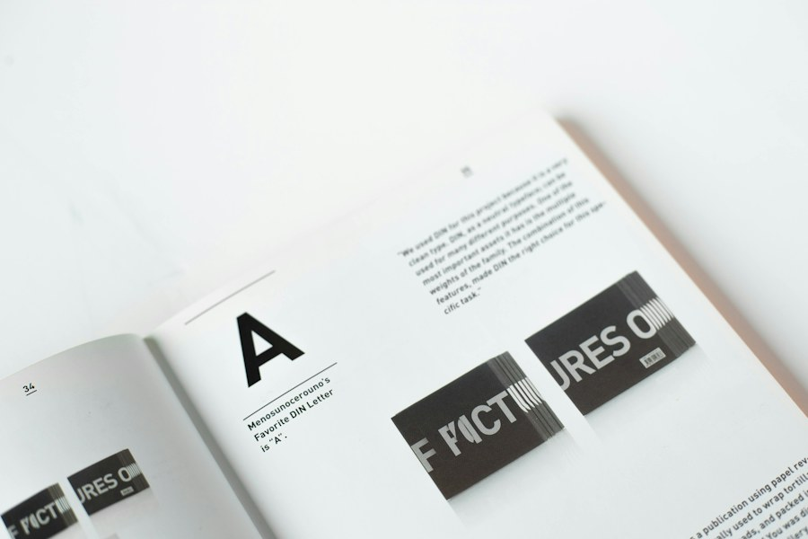
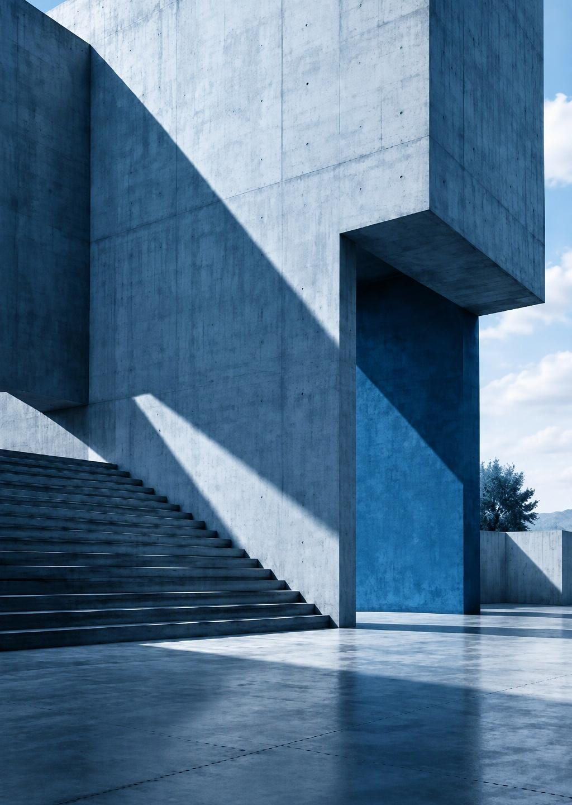
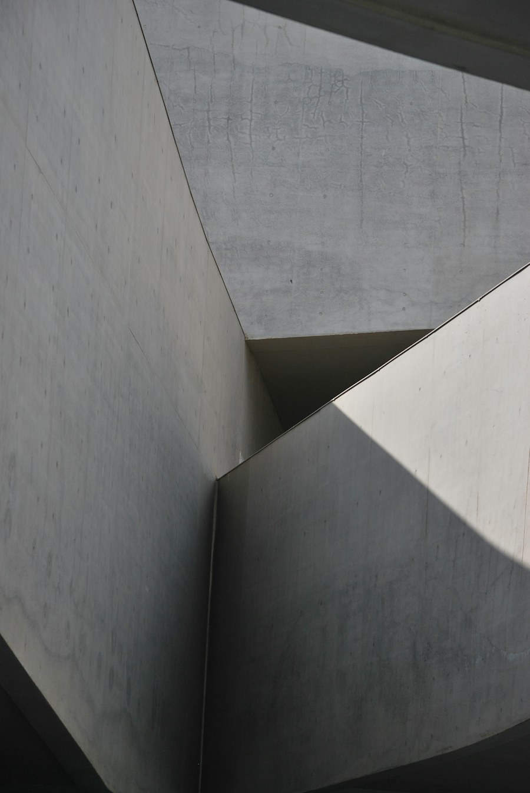
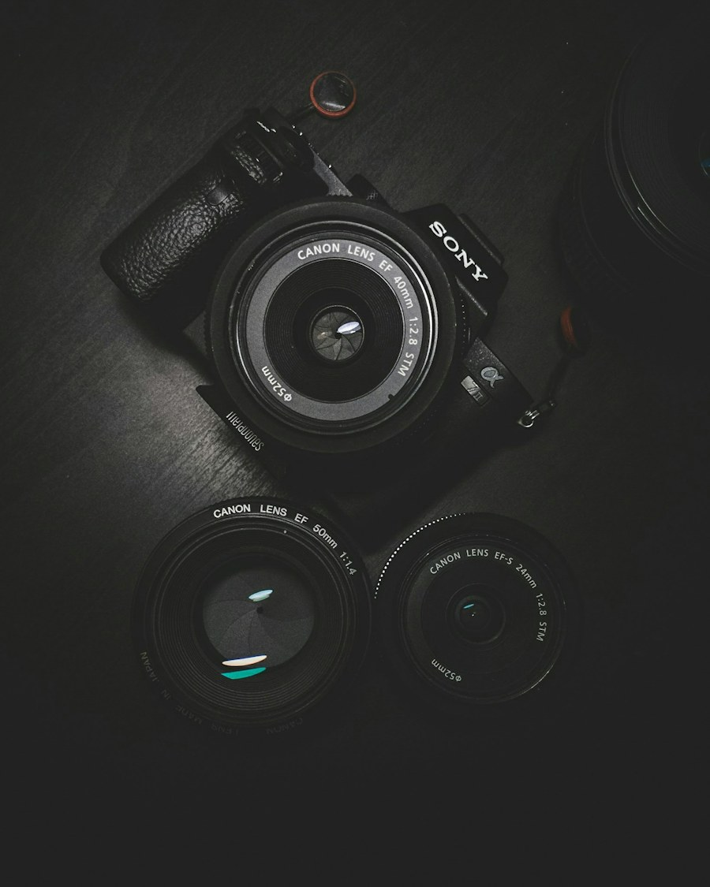
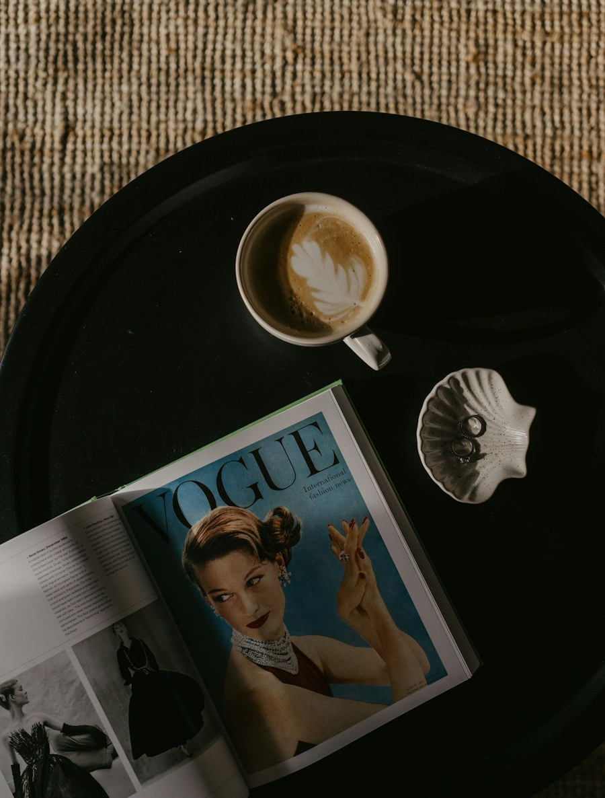
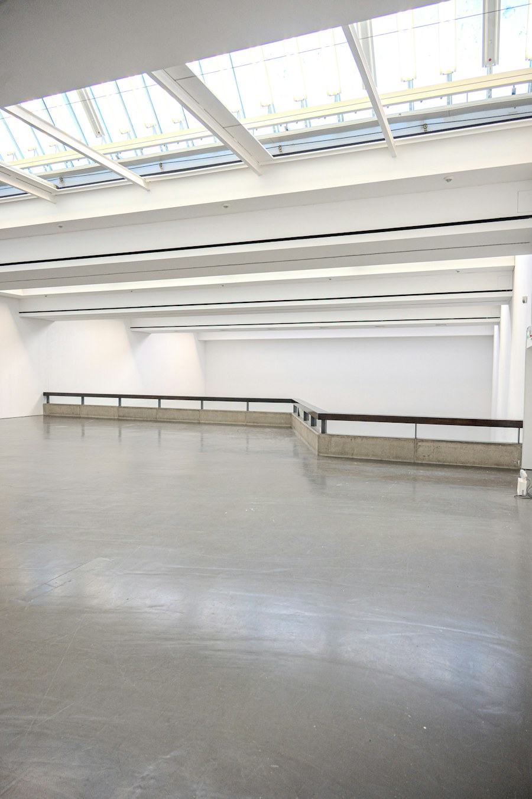
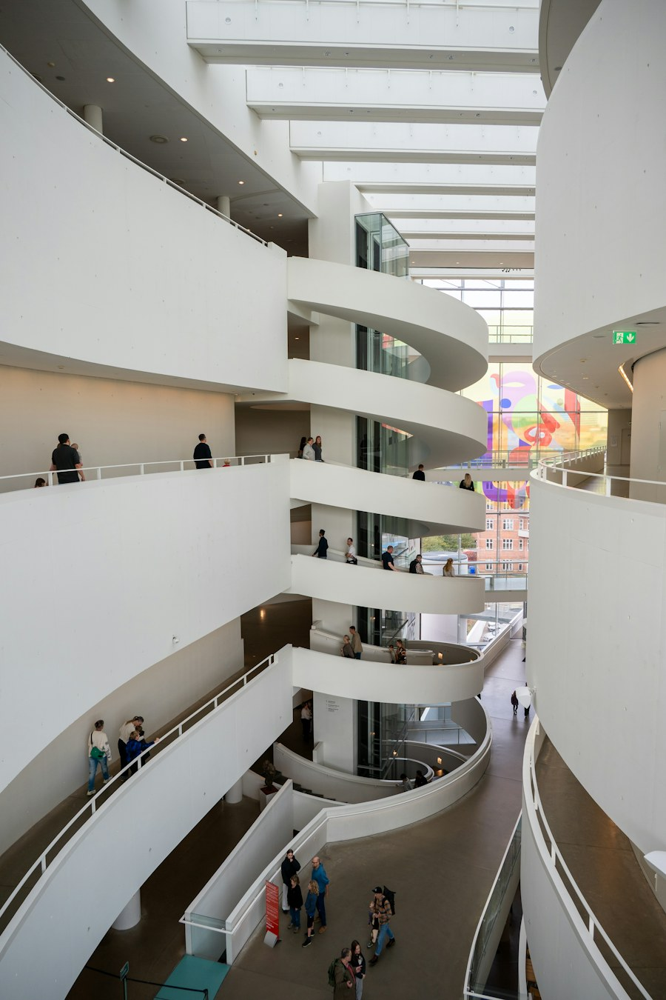
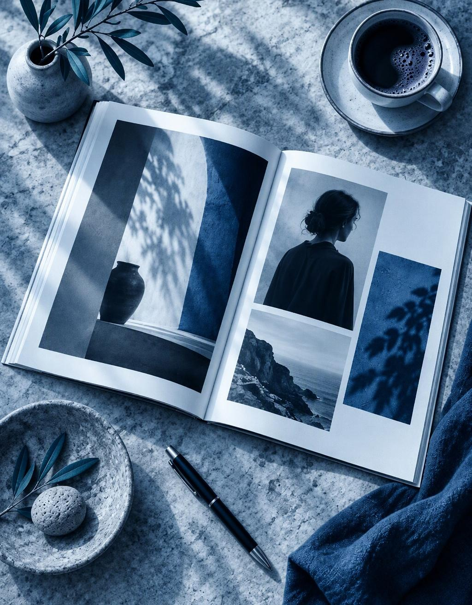
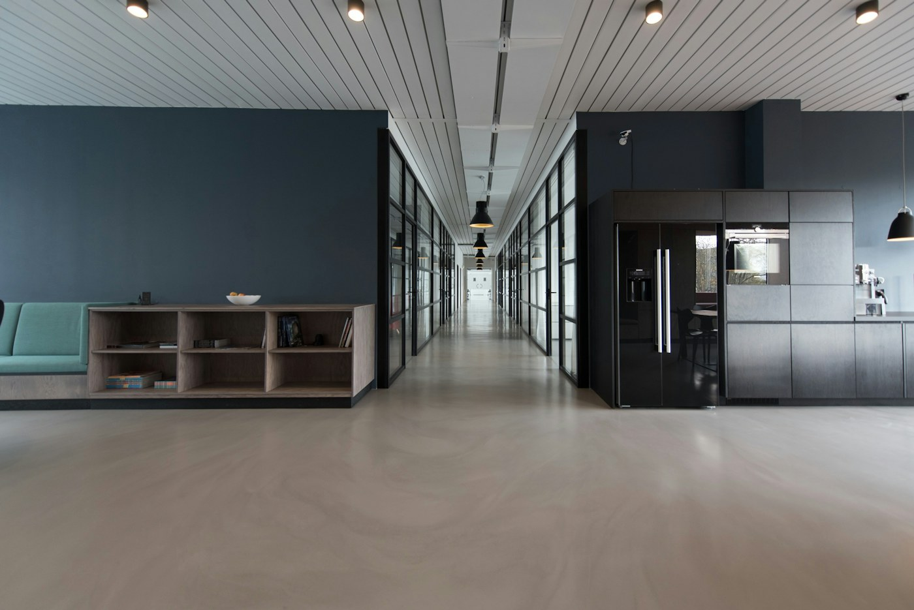
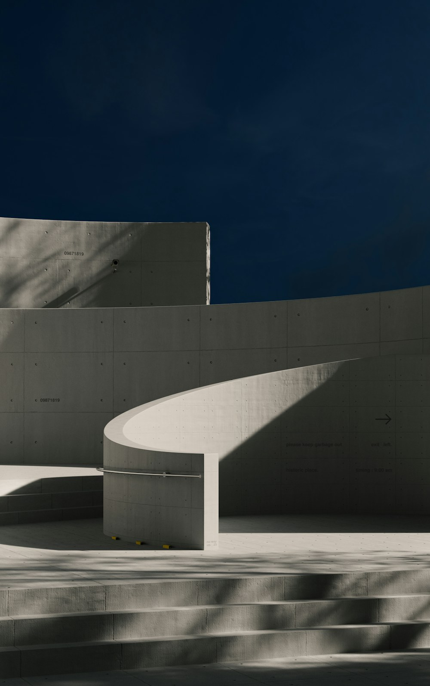

Brand Strategy
& Identity

Positioning, brand thinking, identity and narratives.
A creative consultancy that thinks like a publication and creates like a studio.
The world doesn’t need more noise. It needs better ideas.
Explore what we think ↘
Our point
of view↘

A brand is more than what it sells. It’s what people remember, believe and talk about. Good communication begins with a clear point of view.
↘Our work sits at the intersection of brand thinking, creative production and communication. Capabilities are presented as areas of expertise, not a promise to do everything.

Positioning, brand thinking, identity and narratives.

Films, photography, digital content and visual storytelling.

Campaigns, brand communication, marketing strategy and PR.

Experiential concepts, events, collaborations and storytelling.
Capabilities should be activated only where the team has genuine experience and delivery ability.
Perspectives on the business of brands, creative thinking, advertising and culture. Editorial directions below are proposed launch topics, not published articles.

Suggested subjects from the client direction. Add full articles when researched and written.
The Practice Room can bring together previous experience, self-initiated creative explorations and observations of brands and communication.
No commissioned work is implied. Independent concepts must always be labelled as explorations.Selected projects from partners’ previous roles may be shown with clear individual attribution and permission.

02 / CREATIVE EXPLORATIONSIndependent campaigns, identities and content concepts — clearly marked as speculative explorations.
Analysis of campaigns, communication strategies and market behaviour.
Honest conversations about brands, creativity, business and the people behind them. Interesting perspectives can come from founders, marketers, creative professionals, artists and people beyond the industry.
This section is planned for a future update. Add real partner profiles, professional experience and individual perspectives when the team has approved the details.

What they bring · Relevant professional experience · What they believe about communication.
What they bring · Relevant professional experience · What they believe about communication.
What they bring · Relevant professional experience · What they believe about communication.
Future activity — profile names, photographs, biographies and project credits must be supplied and verified by the team. Combined experience should be attributed honestly.
Strategy, insights and brand thinking.
Ideas, campaigns, content and experiences.
Stories, conversations and connections.

Contact email is a placeholder and must be confirmed before launch.